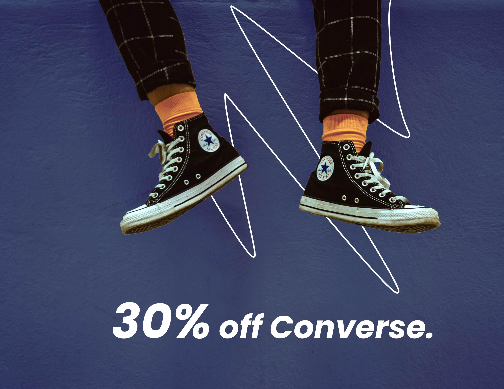

Image Portfolio
I wanted to create a range of imagery that could be used throughout the Sprint website so it is a cohesive experience for the user. I have selected the top six images which best demonstrate my technical editing skills, however, there are more graphics contained within the site.
Sprint logo
To begin, I developed a logo in Adobe Illustrator which captured the brands purpose alongside its playful nature. The final version is a trainer in motion over the ‘Sprint’ title pressing its weight into two of the letters. This provided a basis for shaping the brand and acted as a guide for the styling of the website and content which followed.
- First, I selected the brand font, ‘Poppins’, in bold italic to convey strength and speed.
- I then used the pen tool to draw the out line of a shoe in motion and filled this in with block colour.
- I placed the shape above the ‘i’ and ’n’ in ‘Sprint’ text and the converted the text into shapes to allow me to edit them as shapes with the anchor tool. I created a groove in the text to give the impression of the foot.
- After I had placed the trainer in the text I added small lines behind the trainer to give the impression of movement. I changed the brush definition to make them less linear.
- Finally, I used the brand colour #1d14fb to fill the entire logo shape. This can be changed to white #FFFFFF to suit darker backgrounds.
- I exported this to a PNG file to preserve transparency and allow this to be placed against different back grounds.
Converse promotion image
Edit
Before

I took the above image from Unsplash photos and manipulated it so that it was suitable for use as a promotional image hosted within the landing page of the website.
- I began in Photoshop using the crop tool to clean the edges and remove picture elements I didn’t want.
- I then used the levels adjustment tool and the colour balance tool to adjust the hues and remove any blue/cyan tones.
- Then I selected the legs and shoes and added them to a new layer of their own where I used the selection tool to add an adjustment layer over the socks. I adjusted the hues so they went from yellow to peach in line with the Sprint brand colours.
- I added another adjustment layer over the background wall and added in a blue navy hue so that the colours were consistent with the brand but the wall texture remained.
- I then used the pen tool add in the illustrated scribble so that it was associated with the brand style.
- Finally, I added in Poppins promotional text and exported the image as JPEG appropriate for the web.
Summer meltdown

For this image I wanted to demonstrate my graphic skills and how I am able to manipulate text to grab attention and convey strong brand image. I have created an effect to give the appearance that the text is melting into liquid to match the ‘melt’ reference.
- I began with plain text in Adobe Illustrator, “Summer Meltdown Sale”, and copied this three times. One in a blue colour, and the the other two in white.
- I then arranged these so the were vertically aligned and slightly overlapped. I connected them with the blend tool so the all merged into one another.
- Then I created outlines so the text became an editable shape. I used the warp function to drag and distort the letter shapes to give a melting illusion.
- I then copied this into Photoshop and used the Liquidise tool which elevated this further to make the text look as if it was dripping.
- Finally I added a backdrop in the brand peach colour and exported it as a JPEG safe for web.
Trail wear promotion image
Edit

Before

For this image, I wanted to demonstrate my ability to manipulate backgrounds and their pixels to increase the image size. The original image was 1,232px x 816px which I increased to a square that could be used a promotional image on the website and social media channels.
- I started by using the patch tool in Photoshop to remove the small stones in the top corner of the image.
- Then I extended the Artboard so that it was square using the crop adjust tool.
- I used the free transform tool to fill in the new blank space with the grey concrete pixels from the top half of the original image.
- Once I had enlarged the image background I was able to add in more shoes along the top of the image. I did this by selecting the bottom thee original shoes and copying them into a new layer.
- I the flipped these and dragged them to the top half go the page and adjusted the colours to give more variation.
- Finally, I used the pen tool to add in the illustration and the text tool to add in promotional text.
- I then exported this as a JPEG appropriate for web.
Sport navigation image
Edit

Before

I chose this image to act as a way finder and a navigational element of the website. By clicking this image it will take you to the sport section of the website. I manipulated this so that it was no longer a bright yellow sports shoe with a race track background.
- I opened the file which I sourced on Unsplash photos in Adobe Photoshop. I then used the levels adjustment layer to ensure the tonal range was appropriate.
- I decided to slightly clean up the appearance of the shoes sole and remove small dirt marks with the spot healing brush tool.
- I then added an adjustment layer to alter the yellows on the shoe to orange using the colour adjustment.
- I then switched off the background layer and exported the image as a PNG so the background was transparent.
- I opened the new PNG in Adobe Illustrator. Here I added a new plain navy background to match the colour scheme of the overall website and some promotional text with the text tool.
- As a finishing touch, I added in a plain white illustration line using the pen tool with anchor points. This gives an illustrated interaction with the product and makes it more appealing for users. I exported this as a JPEG appropriate for use on the web.
Sale navigation image
Edit

Before

This is another navigational image which I edited in a similar the way to the running shoe image above.
- First, I used the colour balance tool and hue adjustments to edit the converse colour in Photoshop.
- I then used the quick selection and lasso tools to cut it into its own layer.
- I switched off the background layer and cropped the Artboard so it was just the size of the shoe layer.
- Then I exported it as a PNG so the background was transparent and could be opened in Illustrator.
- Finally, I added in the plain background and brand illustrations as well as the label text.
- This was exported as a JPEG suitable for web.